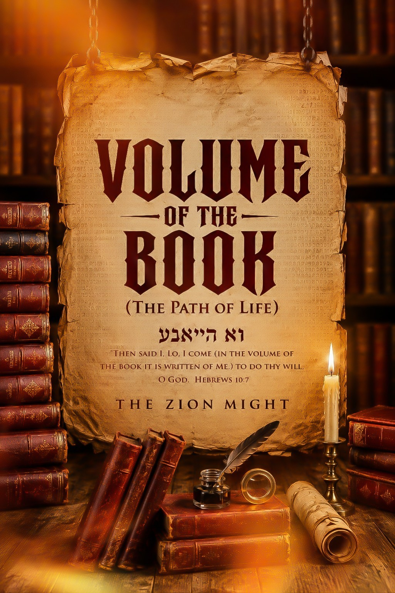
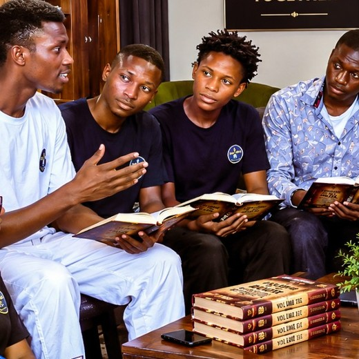
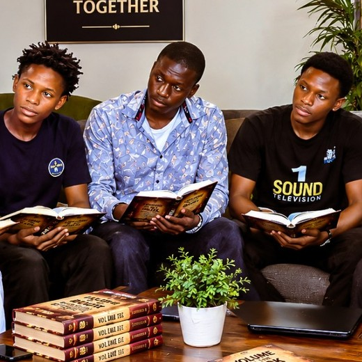
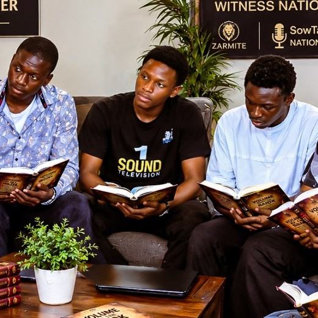
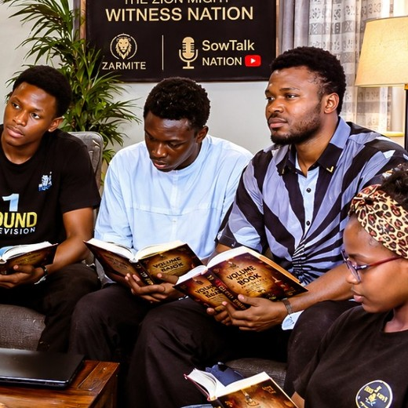
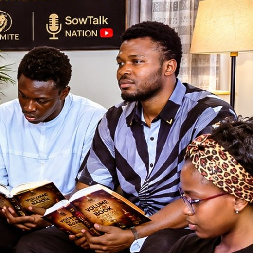
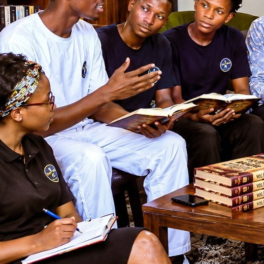
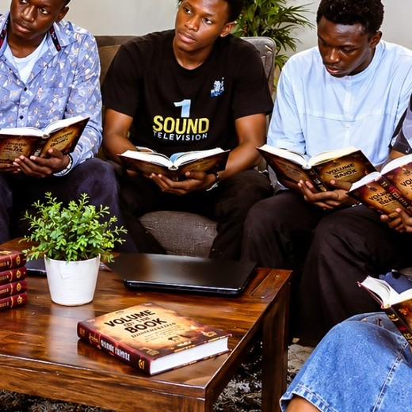

01 / AWAKEN
Discover the call.
Make room for the Word to awaken conviction, purpose, responsibility, and a deeper awareness of God.

A Bible-rooted invitation to grow in understanding, walk deliberately with Christ, discover purpose, and become a faithful witness in every sphere of life.
The Zion Might is a Christian ministry committed to prayer, evangelism, discipleship, spiritual formation, and the raising of lives that can carry kingdom responsibility.
Its work is centred on helping people encounter God's Word, understand their calling, and grow into lives that reflect Christ.
Volume of the Book — The Path of Life is presented as a doorway into a deeper journey of faith. It invites the reader to slow down, search the Scriptures, examine the heart, and discover what it means to live deliberately before God.
The website gives the invitation. The book carries the deeper journey.
Hebrews 10:7 provides the central biblical language: “Lo, I come … to do thy will, O God.”
The vision is simple: form people whose faith is rooted, whose purpose is clear, and whose lives become a living witness.
Make room for the Word to awaken conviction, purpose, responsibility, and a deeper awareness of God.
Grow through Scripture, prayer, fellowship, and disciplined spiritual formation so faith can stand.
Let what is received become visible in character, service, testimony, discipleship, and kingdom impact.
The school is a place for serious study, honest questions, fellowship, prayer, and the formation of people who desire to walk faithfully in their calling.
Study · Fellowship · Formation
A shared table, an open book, and a community learning to walk out the Word.
Faith is more than information. The aim is a life that carries the reality of Christ into relationships, decisions, service, testimony, and the places God sends us.
From the Word to the world, the invitation is to become a faithful witness.
Connect With The Zion MightLet the message become a life that can be seen.
The Path of Life is a foundational Christian resource designed to lead the reader into a more deliberate walk with God and a clearer understanding of the life of faith.
Rather than revealing the whole journey here, this website offers a glimpse of the atmosphere and purpose behind the work.
The purpose of this project is not simply to place another book in someone's hands. It is to create a moment of attention: to open the Scriptures, to ask better questions, and to respond to the life God has written.
Come curious. Come ready to learn. Come ready to walk.
These are broad signposts, not a reproduction of the book's full contents.
A community for biblical teaching, discipleship, prayer, Christian education, evangelism, spiritual growth, and the preparation of witnesses for God in every sphere, as we journey toward the Kingdom of God.
Join The Zion Might Community
Book SupportBook enquiries & participation
Evangelism & OutreachGospel outreach & missions
Prayer & DiscipleshipPrayer, growth & encouragement
Christian EducationResources & foundational training
School OutreachSchools & student outreach
General Ministry SupportService, ideas & participation
General GivingVoluntary financial supportChoose a purpose below. The giving process is voluntary and does not determine access to teachings, resources, fellowship, prayer or the book.
Outside Nigeria: The Zion Might has not yet established an official ministry account or international giving channel. We therefore do not provide personal accounts or informal international arrangements at this time. We appreciate your prayers, fellowship and encouragement while the appropriate structures are established.
Names are presented simply and without unnecessary hierarchy. Titles reflect the present relationship of each person to the work.
The message of the Gospel is an invitation to reconciliation with God through Jesus Christ, to repentance, faith, and a life surrendered to Him.
Talk With Us“Lord Jesus, I come to You in faith. Forgive me, receive me, and lead me. I surrender my life to You and choose to follow You. Help me to know Your Word and live for Your purpose. Amen.”
For the book, school, Kingdom Giving, testimonies, salvation, or general enquiries, reach the team directly.
If God has done something in your life and you would like to share it, the team can receive your testimony directly through WhatsApp.
Share a TestimonyThe Zion Might · Kano State, Nigeria.
The supplied ministry marks are presented together here as provided. No additional logo has been introduced.
Study the Word. Grow in faith. Walk faithfully. Let your life become a witness.